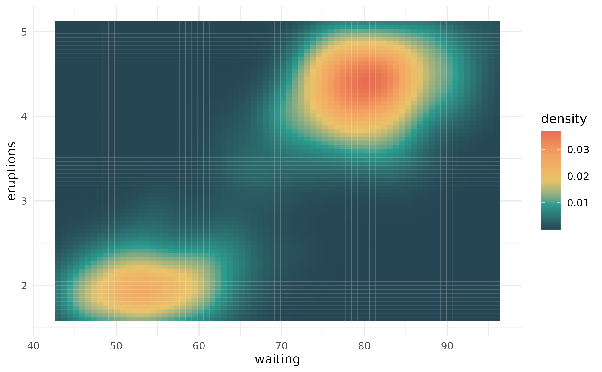

This creates a character vector that represents palettes so when it is printed, it displays the palette colors.
Examples
# use color_palette() to extend or shorten an existing palette
color_palette(album_palettes$lover, n = 10)
#> <color_palette[10]>
#> #76BAE0
#> #7F8AA9
#> #895A73
#> #9A4767
#> #AE3D69
#> #C35682
#> #DA91B0
#> #EDC4D2
#> #F6DCCF
#> #FFF5CC
color_palette(album_palettes$fearless, n = 10)
#> <color_palette[10]>
#> #6E4823
#> #80592A
#> #926A32
#> #A88243
#> #BF9B58
#> #D2B270
#> #E1C68B
#> #EAD4A2
#> #E5D4B2
#> #E1D4C2
color_palette(album_palettes$red, n = 3)
#> <color_palette[3]>
#> #201F39
#> #7E6358
#> #DDD8C9
# you can also define your own color palette
(my_pal <- color_palette(pal = c("#264653", "#2A9D8F", "#E9C46A",
"#F4A261", "#E76F51")))
#> <color_palette[5]>
#> #264653
#> #2A9D8F
#> #E9C46A
#> #F4A261
#> #E76F51
# and then use that palette for plotting
library(ggplot2)
ggplot(faithfuld) +
geom_tile(aes(waiting, eruptions, fill = density)) +
scale_fill_gradientn(colours = my_pal) +
theme_minimal()
